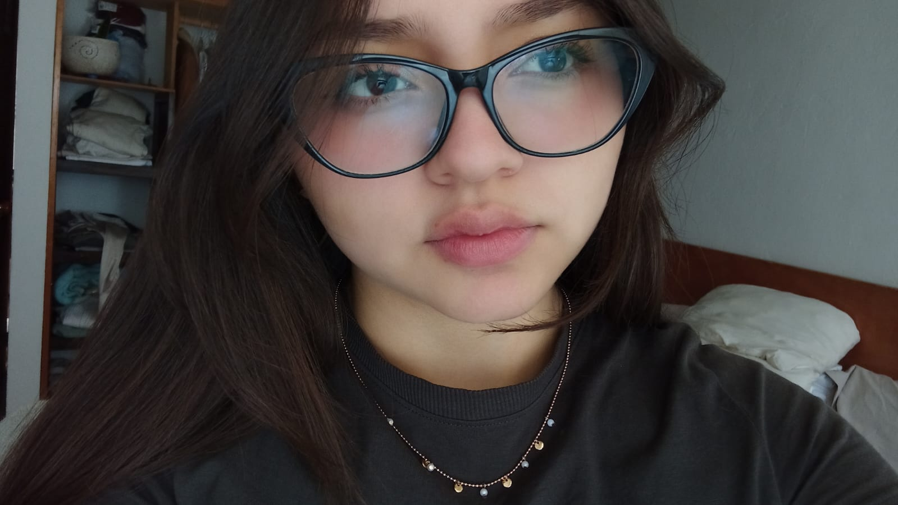
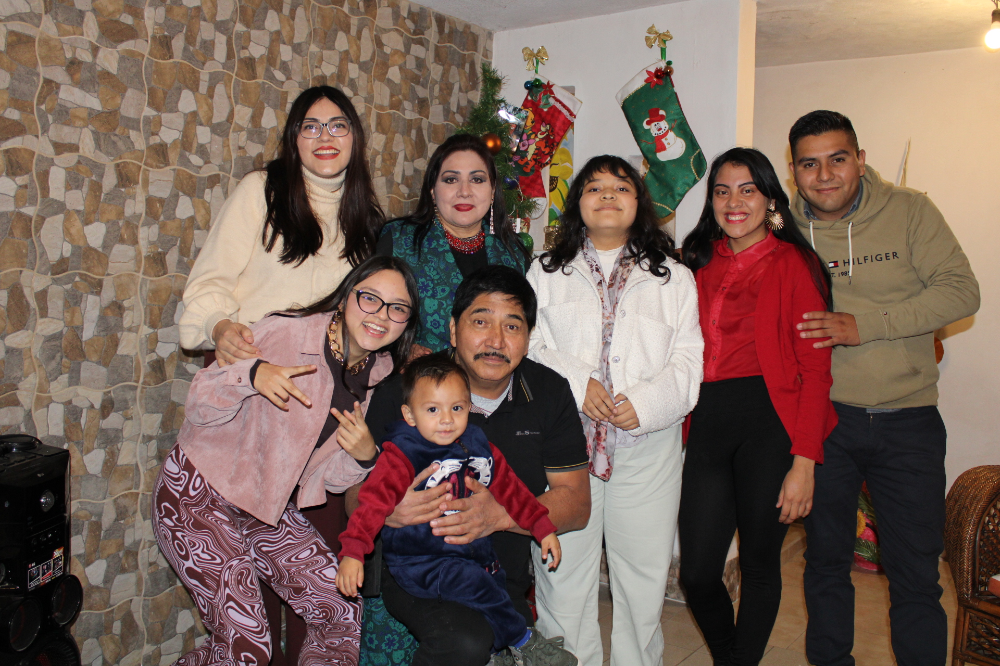

¿Quién soy?
Soy estudiante de diseño gráfico, actualmente estoy estudiando en la BUAP, disfruto mucho estudiar en esa universidad, ya que conocí a personas increíbles y me reencontré con algunas otras lo cual me hace muy feliz. Me considero una persona obtimista, calmada, relajada, responsable y muy dedicada a mi carrera y a las cosas que me gustan.
Mi familia
Actualmente vivo con mi papá, su nombre es Rúben y mis dos hermanas. Mi hermana mayor se llama Hitan Divi, tiene 27 años, ella estudió electrónica en la BUAP y actualmente está cursando su maestría en óptica en el INAOE y mi hermana menor se llama Daira tiene 18 años y recientemente entró a la universidad, se encuentra estudiando la carrera de biología.
Mis hobbies
Dibujar
Desde muy chiquita comencé a hacer mis primeros dibujos y aunque no salían del todo bien eso nunca me desanimó para continuar practicando y seguir haciendo lo que disfrutaba hacer.
Patinar
Mi amor por el patinaje empezó desde que era muy pequeña y fue gracias a mi papá, el me llevaba todos los fines de semana a la pista de hielo que había dentro de una plaza. Realmente lo disfrutaba y podía pasar horas enteras patinando sobre hielo.
Nadar
Para ser sincera, no recuerdo exactamente mi primera clase de natación, lo único que recuerdo era la sensación y el sentimiento de felicidad que sentía cuando tenía mis clases de natación. Actualmente lo sigo practicando aunque no tan seguido como a mi me gustaría.